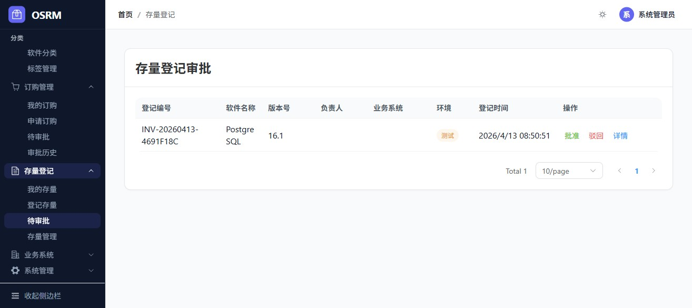
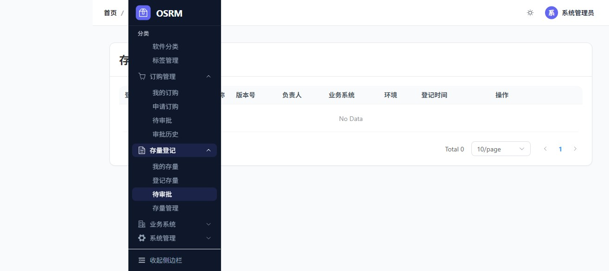
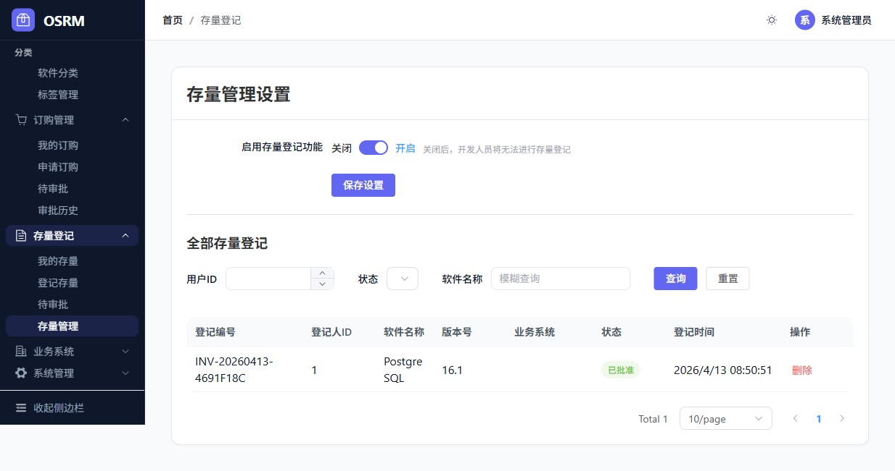

1. 登记表单填写

2. 我的存量列表

3. 待审批列表

4. 审批成功

5. 存量管理

测试环境: 前端 http://localhost:5173 | 后端 http://localhost:8888
测试用例
通过
失败
通过率
PASS
| 步骤 | 操作 | 预期结果 | 实际结果 |
|---|---|---|---|
| 1 | 访问首页 | 页面正常加载 | ✅ 页面标题: OSRM - 开源软件仓库管理系统 |
| 2 | 点击"立即登录" | 跳转到登录页 | ✅ URL变为 /login |
| 3 | 填写用户名admin/密码admin123 | 表单填写成功 | ✅ 填写成功 |
| 4 | 点击登录 | 登录成功跳转首页 | ✅ URL变为 /home，显示"系统管理员" |
PASS
| 步骤 | 操作 | 预期结果 | 实际结果 |
|---|---|---|---|
| 1 | 展开存量登记菜单 | 显示4个子菜单 | ✅ 显示: 我的存量/登记存量/待审批/存量管理 |
| 2 | 点击"登记存量" | 打开登记表单 | ✅ 页面: /inventory/create |
| 3 | 填写软件信息 | 表单填写成功 | ✅ PostgreSQL 16.1, Docker镜像, 测试环境 |
| 4 | 点击"提交登记" | 提交并跳转 | ✅ 跳转至/inventory/my，记录已创建 |
创建记录: INV-20260413-4691F18C | PostgreSQL 16.1 | 状态: 待审批
PASS
| 步骤 | 操作 | 预期结果 | 实际结果 |
|---|---|---|---|
| 1 | 点击"待审批" | 显示待审批列表 | ✅ 显示PostgreSQL记录 |
| 2 | 点击"批准" | 弹出确认对话框 | ✅ 弹出确认提示 |
| 3 | 确认批准 | 审批成功 | ✅ 待审批列表变为空 |
| 4 | 验证存量管理 | 记录状态变为已批准 | ✅ 存量管理页面显示"已批准" |
PASS
| 步骤 | 操作 | 预期结果 | 实际结果 |
|---|---|---|---|
| 1 | 进入存量管理页面 | 显示功能开关 | ✅ 显示"启用存量登记功能"开关 |
| 2 | 验证开关状态 | 开关已开启 | ✅ 开关状态: 开启(checked) |
PASS
| 接口 | 方法 | 状态 |
|---|---|---|
| /api/v1/auth/login | POST | ✅ 200 OK |
| 登录后Token获取 | - | ✅ 返回accessToken/refreshToken |
| 用户信息 | - | ✅ 角色: ROLE_SYSTEM_ADMIN, 包含inventory权限 |
PASS
| 路由 | 页面 | 状态 |
|---|---|---|
| /home | 首页 | ✅ 正常 |
| /inventory/create | 登记存量 | ✅ 正常 |
| /inventory/my | 我的存量 | ✅ 正常 |
| /inventory/pending | 待审批 | ✅ 正常 |
| /inventory/manage | 存量管理 | ✅ 正常 |



✅ REQ-003 存量登记功能 E2E测试全部通过！
Generated by Claude Code E2E Test | OSRM Project | 2026-04-13